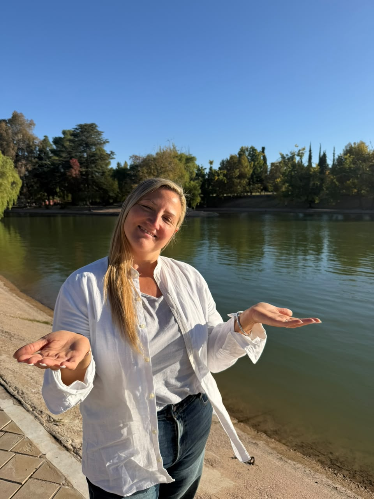
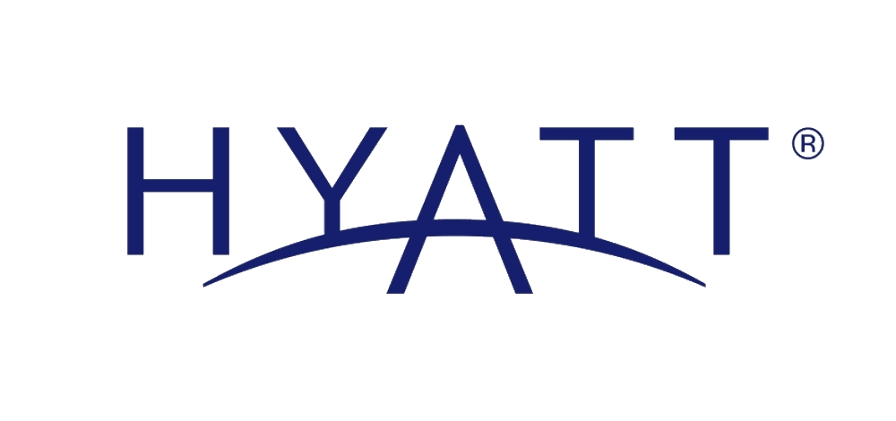

Propuesta corporativa para hotelería cinco estrellas
Park Hyatt Employees Wellness


Bienestar interno, comunidad y pausas activas para elevar clima laboral, colaboración y productividad. Una plataforma digital exclusiva para Capital Humano, diseñada para fortalecer el sentido de pertenencia, la energía disponible y la calidad de servicio desde adentro.
Clima laboral más sano
Microprácticas breves
Adopción medible
Escalable por áreas
Cuidar al colaborador interno es cuidar la experiencia del huésped.
Activo
Capital Humano
Community-led wellness
Un espacio humano, profesional y medible
Resumen ejecutivo
By TaraKundalini
Comunidad interna, contenidos breves, aprendizaje práctico y métricas para acompañar a los equipos sin interrumpir la operación.
- Yoga, meditación y movilización
- Experiencia alineada con RR.HH.
- Programa de acompañamiento
01 / Visión
La experiencia del huésped empieza en el estado interno del equipo.
Esta propuesta convierte bienestar en una herramienta estratégica para elevar desempeño humano, colaboración y rentabilidad operativa con un lenguaje formal, útil y ejecutable.
02 / Video explicativo
Walkthrough de la plataforma
Un reproductor estilizado para mostrar la experiencia completa del sistema: comunidad, contenidos, calendario, gamificación y medición en un solo recorrido.
Interacciones suaves
Diseño didáctico
Lectura rápida para directivos
Reproduce la visión completa de la plataforma con una presentación clara, cercana y lista para board review.
03 / Beneficios y módulos
Herramientas simples para sostener energía, foco y pertenencia.
Módulos pensados para acompañar momentos reales de la jornada: micropausas, capacitación breve, comunicación interna y seguimiento.
Comunidad interna
Un espacio común para interacción, comunicación de RR.HH. y fortalecimiento de vínculos.
Aprendizajes breves
Meditación, yoga, pranayama, movilidad, ergonomía y ejercicios oculares en formato corto.
Calendario visible
Actividades, campañas internas, sesiones, desafíos y eventos vinculados al programa.
Gamificación
Puntos, participación progresiva y desbloqueo de contenidos para aumentar adopción.
Segmentación
Contenidos por área, rol, objetivo, momento de jornada o necesidad operativa.
Métricas
Seguimiento de participación, uso de contenidos y oportunidades de mejora continuas.
05 / Confianza visual
Presencia humana, identidad de marca y confianza en un mismo plano.
Perfil visual de la propuesta con retratos reales, marca propia y señales visuales que ayudan a la decisión sin sobrecargar.
HYATT
TARA KUNDALINI
CAPITAL HUMANO
Una identidad que conecta hospitalidad, bienestar y dirección ejecutiva sin perder claridad visual.
06 / Implementación
Un despliegue simple, ordenado y escalable.
La estructura está pensada para que Capital Humano pueda avanzar rápido, medir adopción y decidir con datos.
Diagnóstico ejecutivo
Objetivos, población inicial, indicadores, tono y alcance del despliegue.
Diseño de experiencia
Plataforma, módulos, contenidos iniciales, calendario y lanzamiento.
Activación inicial
Comunidad, biblioteca, gamificación y acompañamiento real.
Medición
Adopción, uso, feedback cualitativo y oportunidades de ajuste.
Escalado
Formato mensual o trimestral integrado al programa de Capital Humano.
Sinergia
Integración con liderazgo, clima, cultura organizacional y campañas internas.
Objeciones abordadas
La propuesta está preparada para conversar con operación, directivos y RR.HH. sin fricción.
Prácticas breves, asincrónicas y aplicables en pausas activas o microespacios de recuperación.
Objetivos, fases, métricas y trazabilidad para una multinacional hotelera.
Gamificación, contenidos breves y un arranque acotado para validar participación antes de escalar.
Vinculación con clima, colaboración, compromiso, productividad y calidad de servicio.
07 / Formulario
Espacio listo para captar consultas desde GoHighLevel.
Pegá aquí el formulario de GoHighLevel para recopilar nombre, correo, teléfono y cualquier dato que quieras conectar con automatizaciones y seguimiento comercial.
Bloque preparado para formularios externos
Usá este ancla para conectar el CTA principal de la landing.
Formulario listo
Pegá el formulario de GoHighLevel acá
Este bloque queda reservado para el formulario oficial. Cuando lo insertes, va a heredar el estilo de la landing sin depender de backend.
08 / Calendario
Espacio listo para la reserva o agenda de GoHighLevel.
Este bloque queda preparado para incrustar el calendario, así podés dirigir tráfico desde el botón principal a una agenda interna o a una reserva comercial.
Ancla interna para reservas
Conectalo con campañas, anuncios y seguimiento automático.
Calendario listo
Pegá el calendario de GoHighLevel acá
Ideal para agendar turnos, demos o llamadas desde una sola landing, sin salir del flujo visual del proyecto.
09 / Contacto directo
Contacto directo por WhatsApp.
Si querés avanzar, escribinos y te compartimos el material completo y el siguiente paso.
TaraKundalini para Park Hyatt